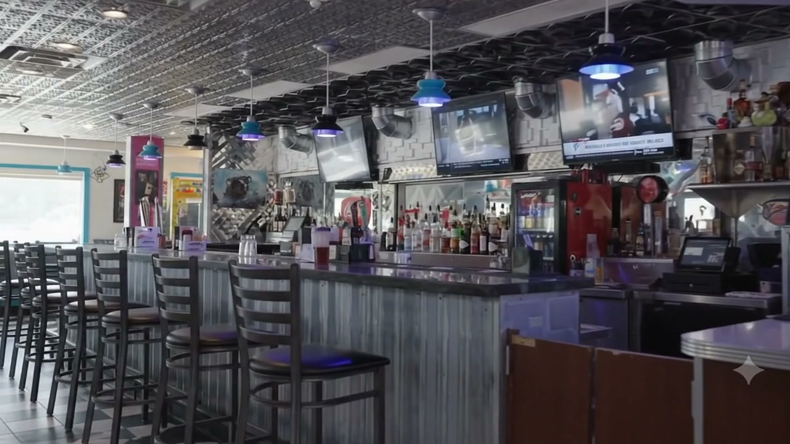

L.I.T. · Christiansburg
An out of this world night out
Lost In Taste launched a space experience that is pure fun: southern and contemporary food, sports on every screen, spirits from the full bar, and a dining room separate from the action.
It's built for everyone , locals, traveling guests, business teams and families. Televisions, music and arcade games fuse it all into one place that feels like a neighbourhood hangout with a rocket-ship personality.
Game-day food, a glowing bar, and karaoke on Fridays , it's the New River Valley's own little space station.Google review · a regular
